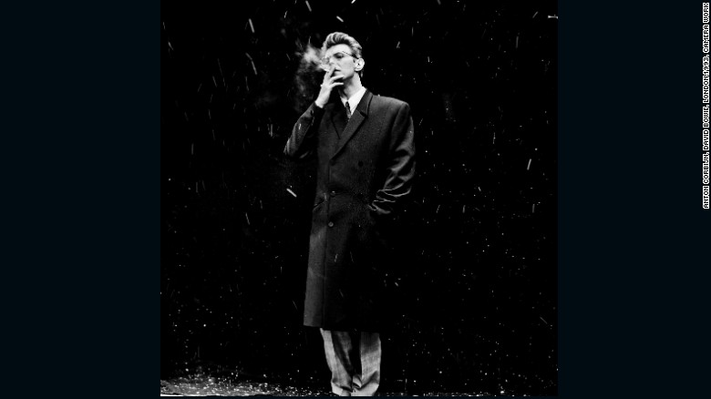

Why this 150-year-old photography practice is making a comeback
This week British artist duo Walter & Zoniel made photographic art history at Photo London 2016 by creating the world's largest Tintype. A life-size portrait of British designer Paul Smith CBE, the piece signifies the launch of The Untouched, a larger series in partnership with the V&A and Gazelli Art House looking at some of Britain's most loved and revered icons. Renowned for their innovative, process-based approach to age-old photographic techniques, Walter Hugo and Zoniel first came up with the idea in 2010, during a smaller-scale project for Showstudio. The only problem was the lens -- they couldn't find one big enough to accommodate the colossal 7ft by 4ft Tintypes.
It took six years, but they eventually tracked one down in San Francisco, fortuitously, at the same time Photo London commissioned them to make something for the second edition of the fair.
How to make the world's largest TinType
To create the work Walter & Zoniel turned the "Dead House" space at Somerset House into a huge camera. Running directly under the listed building's historic courtyard, the cavernous underground area is rumored to contain the gravestones of 17th Century courtiers. In order to capture the image, each subject is required to stand under a full bank of bright lights for up to 30 seconds without moving. To prepare and calm them for this intense experience, Zoniel (using her background in Buddhism) first talks them though a gentle meditation.Walter explains the process inside the giant camera. "We take a giant sheet of metal and cover it in substrate. This is then sensitized with silver nitrate in another tank, removed and loaded into a focus frame. The shutters release, the light hits the metal and that creates the chemical reaction that produces a one-off image directly onto the sheet of metal. It is then developed, fixed and left to dry.
The piece is ready in twenty minutes, like a giant early 19th Century Polaroid."The result is an immersive experience for the subject and the artist and a completely unique, instantaneous, resilient photographic image. "Metal doesn't disintegrate like paper", says Walter, "as long as they are kept away from water, these works will last for at least 500 years". The title of the series The Untouched references the fact that there is no ability or need to retouch or alter the images, as the means of their creation is ethereal. The title is also a nod to the exalted status of the subjects within the eyes of the public.
Celebrity sitters
This is not the first time the art-duo has shot individuals in the public eye. In 2015, for their Alpha-Ation series -- "an ode to the modern day relationship with 'The Portrait' and our everyday acts of adulation" -- Walter and Zoniel shot actors Lindsey Lohan and Emily Watson, photographer Ellen Von Unworth and musician Tinie Tempah, among others. And as part of their 2010-2013 project Reflecting The Bright Lights -- a glass portrait series on the emerging stars of the arts, fashion and music world -- the artists captured talents Eddie Redmayne, Alice Dellal, Jaimie Winston and Oliver Sim (the XX) before they rose to fame. Walter & Zoniel began to turn away from digital camera methods and employ early photographic techniques -- making use of not only tintypes but also ambrotypes, pigment and salt printing -- in 2008."We like the uniqueness and individuality of it", they remark about working in this physically and mentally demanding way. "It's about creating things that no one has ever done before, there's no politics, no satire - it's just about creating unique, aesthetically beautiful objects that stand out. And about capturing the moment, of course." This idea of capturing the moment runs strongly throughout their practice. "Being in the present moment has been lost", says Zoniel. "The long exposure required with our work means that everybody involved in the process is very much involved in the processing of that moment. It really puts you in the moment."